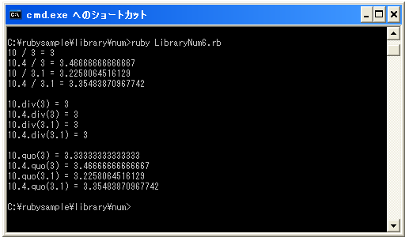
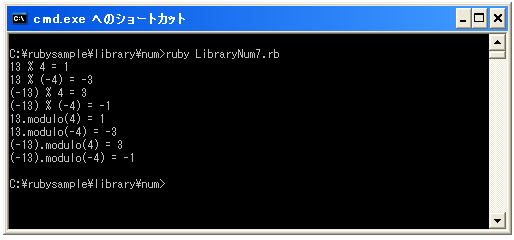

- Home ›
- Ruby入門 ›
- 数値(Numeric)クラス
除算による商と剰余を取得する
数値に対する四則演算の中で商については「/」で剰余については「%」で取得することが出来ます。(四則演算については『四則演算』を参照して下さい)。
商を求めるにはNumericクラスで「div」メソッドと「quo」メソッドが用意されています。
div(other) quo(other)
引数には除算する数値を指定します。結果として商を表す数値を取得します。例えば次のようになります。
num = 10.div(3)
この場合は数値「10」を数値「3」で割った場合の商(この場合は「3」)が取得出来ます。
「div」メソッドは除算の対象である数値が整数でも浮動小数点数でも整数の商を取得します。また「quo」メソッドは除算の対象である数値が整数でも浮動小数点数でも浮動小数点数の商を取得します。
また「/」メソッドによる場合は除算の対象の数値及び除算する数値が共に整数の場合に整数の商を取得し、除算の対象又は除算する数値のどちらか1つでも浮動小数点数の場合は浮動小数点数の商を取得します。
これら3つのメソッドの違いは次の通りとなります。
| 除算の対象 | 除算する数値 | / | div | quo |
|---|---|---|---|---|
| 整数 | 整数 | 整数 | 整数 | 浮動小数点数 |
| 整数 | 浮動小数点数 | 浮動小数点数 | 整数 | 浮動小数点数 |
| 浮動小数点数 | 整数 | 浮動小数点数 | 整数 | 浮動小数点数 |
| 浮動小数点数 | 浮動小数点数 | 浮動小数点数 | 整数 | 浮動小数点数 |
それぞれのメソッドで結果が異なるため注意して下さい。
サンプルプログラム
では簡単なサンプルで試してみます。
#! ruby -Ks
print("10 / 3 = ", 10 / 3, "¥n")
print("10.4 / 3 = ", 10.4 / 3, "¥n")
print("10 / 3.1 = ", 10 / 3.1, "¥n")
print("10.4 / 3.1 = ", 10.4 / 3.1, "¥n¥n")
print("10.div(3) = ", 10.div(3), "¥n")
print("10.4.div(3) = ", 10.4.div(3), "¥n")
print("10.div(3.1) = ", 10.div(3.1), "¥n")
print("10.4.div(3.1) = ", 10.4.div(3.1), "¥n¥n")
print("10.quo(3) = ", 10.quo(3), "¥n")
print("10.4.quo(3) = ", 10.4.quo(3), "¥n")
print("10.quo(3.1) = ", 10.quo(3.1), "¥n")
print("10.4.quo(3.1) = ", 10.4.quo(3.1), "¥n")
実行結果は次のようになります。

剰余を求める
剰余を求めるにはNumericクラスで「modulo」メソッドと「remainder」メソッドが用意されています。
modulo(other) remainder(other)
引数には除算する数値を指定します。結果として剰余を表す数値を取得します。例えば次のようになります。
num = 10.modulo(3)
この場合は数値「10」を数値「3」で割った場合の除算(この場合は「1」)が取得出来ます。
「modulo」メソッドは「%」メソッドとまったく同じ動作をします。この場合は除算をする数値が正の数の場合は剰余も正の数となり除算をする数値が負の数の場合は剰余も負の数となります。
10を3で割った場合、商が「3」剰余が「1」 10を(-3)で割った場合、商が「-4」剰余が「-2」 (-10)を3で割った場合、商が「-4」剰余が「2」 (-10)を(-3)で割った場合、商が「3」剰余が「-1」
※10を(-3)で割った場合、商が「-3」で剰余が「1」ではありません。除算をする数値が負の数の場合は剰余が負の数になるように商と剰余が求められます。
「remainder」メソッドの場合、求められる剰余は除算の対象の数値の符号と同じになります。
10を3で割った場合、剰余は「1」 10を(-3)で割った場合、剰余は「1」 (-10)を3で割った場合、剰余は「-1」 (-10)を(-3)で割った場合、剰余は「-1」
「remainder」の場合は対応する商を求めるメソッドはありません。少し特殊なメソッドと考えてもいいかと思います。
サンプルプログラム
では簡単なサンプルで試してみます。
#! ruby -Ks
print("13 % 4 = ", 13 % 4, "¥n")
print("13 % (-4) = ", 13 % (-4), "¥n")
print("(-13) % 4 = ", (-13) % 4, "¥n")
print("(-13) % (-4) = ", (-13) % (-4), "¥n")
print("13.modulo(4) = ", 13.modulo(4), "¥n")
print("13.modulo(-4) = ", 13.modulo(-4), "¥n")
print("(-13).modulo(4) = ", (-13).modulo(4), "¥n")
print("(-13).modulo(-4) = ", (-13).modulo(-4), "¥n")
実行結果は次のようになります。

商と剰余を求める
商と剰余を求めて配列に格納するメソッドも用意されています。Numericクラスで用意されている「divmod」メソッドを使います。
divmod(other)
引数には除算する数値を指定します。結果として商と剰余を [商, 剰余] という 2要素の配列にして取得出来ます。この場合、商は「div」メソッドの結果と同じで剰余は「modulo」メソッドの結果と同じです。
実際の使い方は次のようになります。
num = 10.divmod(3)
この場合は変数「num」には[3, 1」と言う配列が格納されます。
結果がまとめて配列に格納されるだけですのでサンプルは省略します。
( Written by Tatsuo Ikura )

著者 / TATSUO IKURA
初心者～中級者の方を対象としたプログラミング方法や開発環境の構築の解説を行うサイトの運営を行っています。